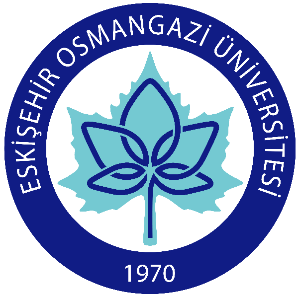

Burak Uzkent Ph.D.
Computer Vision Engineer,
Autel Robotics USA,
Address : 5000 Executive Parkway,
Autel Robotics USA,
Address : 5000 Executive Parkway,
San Ramon, CA 94583.
E-mail : buzkent at autelrobotics dot com
E-mail : buzkent at autelrobotics dot com
bxu2522 at rit dot edu
[ Background ]
I am currently working for the Autel Robotics as a Computer Vision Engineer. My works involves helping the computer vision team build autonomous flying capability on the next generation drones. Particularly, I am spending most of my time on developing highly efficient online learning single visual target tracking algorithm in the Computer Vision team led by Dr. Seo. Additionally, I work on implementing the tracking algorithm on the embedded platform. Prior to joining the Autel Robotics Computer Vision team, I pursued my Ph.D. (2011-2016) in the Chester F. Carlson Center for the Imaging Science at Rochester Institute of Technology under the advisory of Dr. Matthew. J. Hoffman. I conducted research on using a multi-modal sensor to detect and track vehicles from a moving and fixed aerial platform. Also, for short term I performed research on 3-D MRI Cardiac Segmentation using Graph Cuts to understand the mechanism underyling the cardiac fibrillation. During my Ph.D., I worked for Huawei R&D (2015) as a Computer Vision Algorithm Engineer Intern where I worked on extracting semantics from a family photo album using Deep Learning driven face and contextual features. My supervisor at Huawei R&D was Dr. Dong-ging Zhang. Before my arrival to RIT, I earned my Masters Degree (2011) in the Electrical & Computer Engineering Department at University of Bridgeport. Under the advisory of Dr. Buket Barkana, I conducted research on non-speech environmental sound classification in the Signal Processing Research Group. Finally, I finished my Bachelors degree (2009) in the Electrical & Electronics Engineering Department at Eskisehir Osmangazi University under the advisory of Dr. Osman Parlaktuna. My research interests lie in the fields of visual object tracking, aerial vehicle detection, object segmentation and classification, deep learning and audio signal processing. You can find more information on my background in my CV and publications.[ Education ]
-
 Rochester Institute of Technology,
2011-2016, Ph.D.
Rochester Institute of Technology,
2011-2016, Ph.D.
-
 University of
Bridgeport, 2009 - 2011, MS.
University of
Bridgeport, 2009 - 2011, MS.
-
Eskisehir Osmangazi University, 2004 - 2009, BS.
[ News ]
- I am currently working on potential applications of
Kernelized Correlation Filters to hyperspectral aerial
videos for object tracking.
- We submitted our paper on high speed object tracking to
the British Machine Vision Conference
2017. Please contact me for more details.
- Uzkent, Burak. "EnKCF : Ensemble of Kernelized Correlation Filters for Object Tracking in High Speed".
- Our paper is accepted to the Perception
Beyond the Visible Spectrum Workshop in conjunction
with the Computer Vision and Pattern Recognition
Conference 2017. [ Abstract ]
- Uzkent, Burak, Aneesh Rangnekar, Matthew J. Hoffman, and Anthony Vodacek. "Aerial Vehicle Tracking by Adaptive Fusion of Hyperspectral Likelihoods Maps".
- Our Hyperspectral Aerial Video Set for vehicle tracking is uploaded now. Please cite the paper below if you use this dataset for your research.
- Uzkent, Burak, Matthew J. Hoffman, and Anthony Vodacek. "Real-Time Vehicle Tracking in Aerial Video Using Hyperspectral Features." In Proceedings of the IEEE Conference on Computer Vision and Pattern Recognition Workshops, pp. 36-44. 2016.
Please visit my google scholar profile for the updated list of my publications.
[ Google
Scholar ]
You can find my up-to-date CV below.
[ Curriculum Vitae ]
In my free time, I try to stay active by playing football,
basketball and running. I am a big fan of Galatasaray Football
Team and my favorite football player is George Hagi, the
Galatasaray Legend.